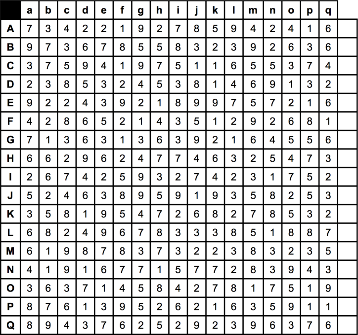

Legal Men

- Won the WWF Junior Heavyweight Title in a three-way match
- Threw a respect match at Superbrawl
- Deformed South Park enthusiast and friend of the Insane Clown Posse
- Wrestled a match in memory of his brother on October 4, 1999
- An earl who teamed up with a lord and a squire
- Used Arrogance as a weapon
- New Jack's partner for exactly one ECW Tag Title reign
- Arguably the Yoko Ono of 3 Live Kru
- Shares his nickname with the Hawaiian star of Fuji Vice
- WCW Cruiserweight Tag Team Champion who sang his own theme song
- Was managed by Scott Levy in Levy's first WWF appearance
- Fourth-highest-ranking officer in the Misfits in Action
- His mask has often been likened to a yellow jockstrap
- Was attacked and replaced by Redd Dogg
- NWO member whose first and middle initials parodied Vince McMahon
- Namesake of a tournament won by Shelley and Waltman
- Only Tough Enough winner to hold the Intercontinental Championship
- Refused to shake hands at the end of the match that crowned the first ROH champion
- Fell through a wall on A Flair for the Gold
- Only man other than Hulk Hogan to wrestle at the first nine Wrestlemanias
- Lost his "girlfriend" through a woodchipper
- Received the WWF championship as a gift (it was declared vacant afterwards)
- Only Mexican-American to play Tiger Mask's evil twin
- Magically caused the Ultimate Warrior to vomit
- Penultimate holder of the CWF Heavyweight Championship
- Lost a Halloween Havoc match after being attacked with a cattle prod
- Won a brand new belt by defeating Owen Hart in Germany
- First man pinned on camera at the last Guilty as Charged
- Renamed three titles to reflect his Canadian heritage
- Shares his name with the first baseman from an Abbott & Costello routine
- Cut a promo as the host of "Monday Nyquil"
- His regular Byte This! co-host shares a name with Nailz
- Lost a boxing match in under a minute at Wrestlemania
- First victim of the double Doink phenomenon